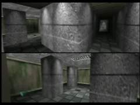

|
.
| Goldeneye
: Basement |
Taille
- Grand,
mais en fait Petit, car tout est étiré. De longs Couloirs,
2 Salles à Colonnes plus ou moins Grandes. C'est un Niveau
Standard. Pour plus d'infos, voir Stack et Library ! Décor - Très sombre par endroits, plutot clair dans la Partie Kaki du Niveau. Un peu de Gris par-ci par-là. Vous l'aurez compris, ce Niveau est SOBRE. Et un peu déprimant, mais bon après tout c'est une Cave hein ? Armes - Idéal pour toutes les Armes. Génial pour les Couteaux de Lancer, because longs couloirs. C'est la Fête aux Roquettes de meme. Les Pistols sont sympas aussi, vu les Longs Couloirs. Camping - Y a un mince passage TOUT noir très agréable pour rester à l'Abri et prunifier un peu tout le Monde qui passe. Il y a les 2 sorties bloquées qui font d'excellents nids ! Y a aussi les sortes d'Alcoves Kaki qui sont un bon endroit. Ceux qui passent vite ne vous verront pas et hop, un chargeur dans le dos ni vu ni connu ! |
 |
 |
 |
Sur
l'ecran du Bas, on voit clairement (c'est le cas de l'ecrire) le
Couloir Noir. Certains joueurs ne savent meme pas qu'il existe,
alors profitez-en ! |
La
Salle aux Alcoves. Pas besoin de Commentaires non ? Très
agréable pour se cacher en attendant une Proie... |
Ecran
du Haut, le long couloir, idéal pour les Roquettes, et à
coté la Petite Salle aux Piliers, bien vicieuse si on sait
bien s'y cacher... |
 |
 |
 |
Les
Salles aux Colonnes sont d'excellents lieux pour les courses poursuites
en Power Weapons. |
Le
Couloir du Gilet, lieu de toutes les convoitises !! Ruez-vous dessus
!!! |
Les
Passage reliant les 2 Salles de Colonnes. Pas trop fréquenté... |
.